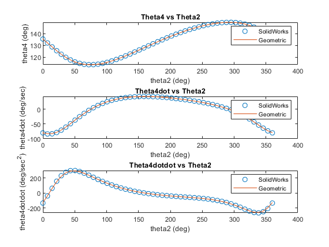

Contents
Problem 1 - import motion analysis data
clc,clear,close all
theta4Table = readtable('Link4-theta4.csv','NumHeaderLines',2);
dtheta4Table = readtable('Link4-theta4dot.csv','NumHeaderLines',2);
ddtheta4Table = readtable('Link4-theta4dotdot.csv','NumHeaderLines',2);
theta2_start = pi;
t = theta4Table{:,1};
theta2_sim = (30*((2*pi)/60))*t + theta2_start;
theta2_sim = rad2deg(theta2_sim);
theta4_sim = theta4Table{:,2} + 180;
theta4dot_sim = dtheta4Table{:,2};
theta4dotdot_sim = ddtheta4Table{:,2};
Geometric equation for Four bar position to compare to SW results
r1 = 13;
r2 = 4;
r3 = 15;
r4 = 20;
theta2 = theta2_sim;
theta4 = zeros(length(theta2),1);
theta3 = zeros(length(theta2),1);
for i=1:length(theta2)
e = sqrt(r1^2 + r2^2 - 2*r1*r2*cosd(theta2(i)));
alpha = asind((r2*sind(theta2(i)))/e);
gamma = acosd((r3^2 + r4^2 - e^2)/(2*r3*r4));
beta = asind((r3*sind(gamma))/e);
theta4(i) = 180 - alpha - beta;
theta3(i) = theta4(i) - gamma;
end
dt = t(2) - t(1);
theta4dot = gradient(theta4,dt);
theta4dotdot = gradient(theta4dot,dt);
Plot data
theta2_sim = theta2_sim - 360;
theta2 = theta2 - 360;
figure(1)
subplot(3,1,1)
plot(theta2_sim(26:76),theta4_sim(26:76),'o',theta2(26:76),theta4(26:76))
xlabel('theta2 (deg)')
ylabel('theta4 (deg)')
title('Theta4 vs Theta2')
legend('SolidWorks','Geometric')
subplot(3,1,2)
plot(theta2_sim(26:76),theta4dot_sim(26:76),'o',theta2(26:76),theta4dot(26:76))
xlabel('theta2 (deg)')
ylabel('theta4dot (deg/sec)')
title('Theta4dot vs Theta2')
legend('SolidWorks','Geometric')
subplot(3,1,3)
plot(theta2_sim(26:76),theta4dotdot_sim(26:76),'o',theta2(26:76),theta4dotdot(26:76))
xlabel('theta2 (deg)')
ylabel('theta4dotdot (deg/sec^2)')
title('Theta4dotdot vs Theta2')
legend('SolidWorks','Geometric')

Problem 2 - Find max and min
SW_max = max(theta4_sim(1:54))
SW_min = min(theta4_sim(1:54))
geom_max = max(theta4(1:54))
geom_min = min(theta4(1:54))
fprintf('\nIt looks like the SolidWorks and geometric max and mins are almost identical, the SW motion analysis is very accurate\n.')
SW_max =
149.4753
SW_min =
113.6051
geom_max =
149.4753
geom_min =
113.6051
It looks like the SolidWorks and geometric max and mins are almost identical, the SW motion analysis is very accurate
.